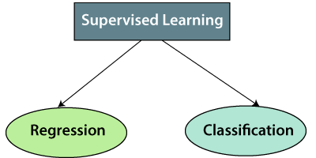

Nadzirano učenje
Model se obučava sve dok ne otkrije osnovne obrasce i odnose između ulaznih podataka i izlaznih oznaka, omogućavajući mu da daje tačne rezultate obeležavanja kada se predstavi sa nikada ranije viđenim podacima. Učenje pod nadzorom je dobro u problemima klasifikacije i regresije, kao što je određivanje kojoj kategoriji novinski članak pripada ili predviđanje obima prodaje za dati datum u budućnosti.
Paralelni zadatak u psihologiji ljudi i životinja često se naziva učenje koncepta.
Cilj algoritma za učenje pod nadzorom je da pronađe funkciju mapiranja za mapiranje ulazne promenljive(k) sa izlaznom promenljivom(i).
Koraci uključeni u nadgledano učenje:
- Prvo odredite tip skupa podataka za obuku
- Prikupite/prikupite označene podatke o obuci.
- Podelite skup podataka za obuku na skup podataka za obuku, skup podataka za testiranje i skup podataka za validaciju.
- Odredite ulazne karakteristike skupa podataka za obuku, koji treba da imaju dovoljno znanja kako bi model mogao tačno da predvidi izlaz.
- Odredite odgovarajući algoritam za model, kao što je mašina vektora podrške, stablo odlučivanja itd.
- Izvršite algoritam na skupu podataka za obuku. Ponekad su nam potrebni setovi za validaciju kao kontrolni parametri, koji su podskup skupova podataka za obuku.
- Procenite tačnost modela pružanjem testnog skupa. Ako model predviđa tačan izlaz, to znači da je naš model tačan.
Tipovi nadgledanih algoritama mašinskog učenja:
Nadzirano učenje se dalje može podeliti na dve vrste problema:
1. Regresija
Algoritmi regresije se koriste ako postoji veza između ulazne i izlazne promenljive. Koristi se za predviđanje kontinuiranih varijabli, kao što su vremenska prognoza, tržišni trendovi, itd. Ispod su neki popularni algoritmi regresije koji su pod nadzorom učenja:
- Linearna regresija
- Stabla regresije
- Bajesova linearna regresija
- Polinomska regresija
Algoritmi klasifikacije se koriste kada je izlazna promenljiva kategorična, što znači da postoje dve klase kao što su Da-Ne, Muško-Žensko, Tačno-Netačno, itd.
- Filtriranje neželjene pošte
- Nasumična šuma
- Decision Trees
- Mašine za vektor podrške
- Logistička regresija